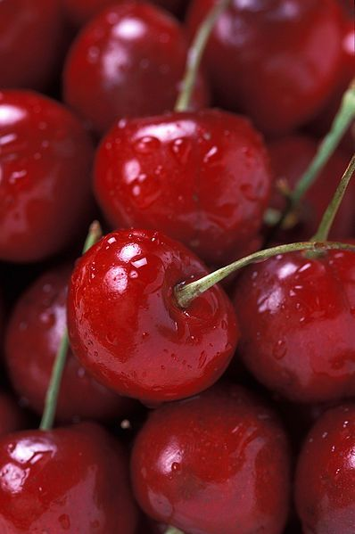

products
- Coffee: Uganda is renowned for both its Robusta and Arabica varieties. Coffee is the leading agricultural export product for the nation.
- Tea: Another major cash crop, with large plantations particularly in the western region.
- Bananas (Matooke): A staple food, particularly in the central region. It's a significant part of the Ugandan diet and culture.
- Maize: A vital staple that feeds the majority of the population. It's also an essential crop for both domestic consumption and export to neighboring countries.
- Livestock Products: This includes beef, goat meat, poultry, milk, and eggs. Uganda has a vibrant livestock sector, especially in the cattle corridor stretching from the southwest to the northeast.
- Horticultural Products: This includes a variety of fruits and vegetables like pineapples, mangoes, watermelons, tomatoes, and green peppers.
- Horticultural Products: This includes a variety of fruits and vegetables like pineapples, mangoes, watermelons, tomatoes, and green peppers.
